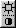

| Min / Max | Displays the minimum / maximum value of the display range. Unless the image is at the bottom of the Image List, any voxels with intensity below the minimum set here will not appear, i.e., will be transparent. | |
|  | Bricon Reset | Reverts brightness and contrast to original values. |
|
Bricon Sliders | Controls brightness(above) and contrast(below). |